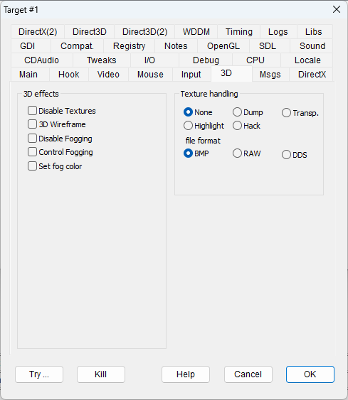

|
Disable Textures |
NOTEXTURES |
Remaps all textures with a white texture (Direct3D only). |
|
3D wireframe |
WIREFRAME |
Shows graphics in wireframe mode. This option works with Direct3D and OpenGL programs, but not with DirectDraw programs. |
|
Disable Fogging |
DISABLEFOGGING |
Disables the fogging effect (Direct3D only). |
|
Control fogging |
CONTROLFOGGING |
Enables the effects on generic 3D rendering that can be controlled from the 3D effects panel. |
|
Set fog color |
SETFOGCOLOR |
Where it is possible, the flag forces the fog color to a custom value. The custom fog color is defined in the "Defaults" tab in Global settings. |
These flags help modders manage game textures. In particular, they can highlight where textures should be used, extracting them as bitmaps, or replacing textures with custom ones. Use the Dump flag to extract textures, or the Hack flag if you plan on using a graphics editor to create customized replacement textures.
|
None |
The default behavior. Does not apply special handling to textures. |
|
|
Dump |
TEXTUREDUMP |
All the hooked textures that match the criteria in the Texture section of your "dxwnd.ini" configuration file are extracted as bitmap files and dumped into DxWnd's "texture.out" subfolder. The automatic filenames include a hash of the file's graphical content to make it easier to uniquely identify each texture. |
|
Transp. |
TEXTURETRANSP |
Flag reserved for making textures partially transparent (e.g., transparent walls). It is currently unimplemented, so DO NOT USE it. |
|
Highlight |
TEXTUREHIGHLIGHT |
All hooked textures are replaced with a randomly-generated solid color. This makes it easier to see texel boundaries and texture usage. |
|
Hack |
TEXTUREHACK |
This option replaces all the hooked textures by calculating hashed filenames, looking for those names in DxWnd's "texture.in" subfolder, and using any matching texture that it finds there. |
|
BMP |
Textures are saved to/loaded from bitmap files. These files can be viewed or edited, though the bitmap header characteristics must be preserved (color depth, palette, etc.). |
|
RAW |
Textures are saved to/loaded from raw files. These files are more compact, but they can't be viewed or edited unless the bitmap format is known. |
|
DDS |
Textures are saved to/loaded from files in DDS format. |